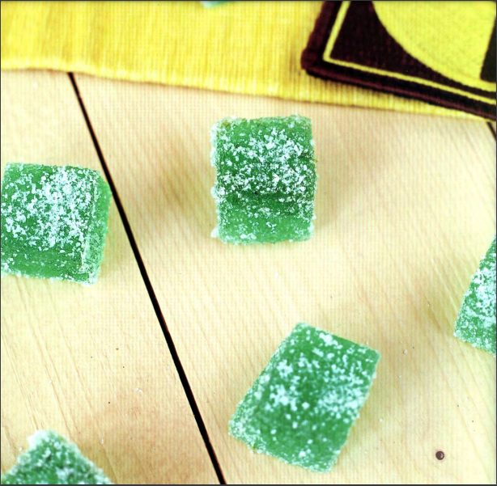

Radioactive Gumdrops

Ingredients
For the gumdrops:
- 3 tablespoons unflavored gelatin
- 3 tablespoons unflavored gelatin
- 1 teaspoon lemon extract
- 1 teaspoon orange extract
- ½ teaspoon rosemary extract (optional)
- 10 drops green food coloring
- 2 cups sugar
- ¼ cup lime juice
- 2 teaspoons lime zest
- 2 teaspoons citric acid
For the coating:
- ¼ cup sugar
- 1 tablespoon citric acid (less if you want
these to be less tart)
Recipe
- In a large heat-resistant bowl, combine the gelatin and 3/4
cup of the water. Set aside
- In a small bowl, combine the lemon extract, orange extract, rosemary extract (if using),
and food coloring. Set aside .
- Combine the remaining 1 cup water and the sugar in a medium saucepan over mediumhigh heat. Bring to a slight boil and simmer for 5 minutes on medium-low, then pour the
hot sugar water into the large gelatin mixture bowl. Stir until the gelatin is completely
dissolved .
- Add extracts, lime juice, lime zest, and citric acid to the gelatin bowl and stir until
incorporated. Prepare a 10-by-10-inch pan by lining it with aluminum foil and spraying
with nonstick spray. Pour the mixture into the prepared pan. Cover and refrigerate for at
least 8 hours
- Line a large baking sheet with parchment paper and set a wire rack on top . Remove the
cooled candy by pulling the aluminum from the pan. Flip the candy onto a cutting board
and remove the aluminum foil. Cut the candy into bite-size square pieces and place on the
wire rack. Leave the candy sitting out at room temperature for 10 hours.
- To make the coating, combine the sugar and citric acid on a plate . Roll the gumdrops
in the sugar mixture. Place the coated pieces back on the wire rack, making sure they
are not touching. Refrigerate, uncovered, for another 10 hours to dry out. After this last
drying stage, they are ready to eat. These are best served cold and will stay fresh in the
refrigerator for up to 2 weeks.
Home page